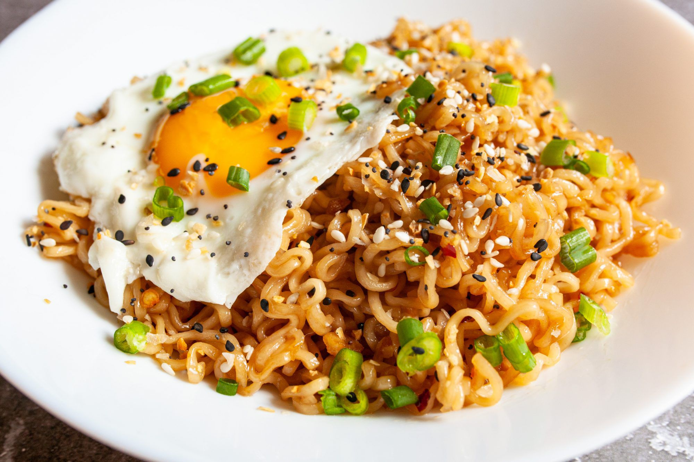

Ramen

Description
Making ramen is quick and easy while also being one delicious meal. You only have to heat
up some water, add the ramen, add the topping and then enjoy. The topping can aslo be
whatever one desires, where my favorite is a egg.
Ingredients
- Instant Ramen - one pack
- Water - 500ml
- Egg - one
Steps
- Start by boiling the water and setting the ramen in a bowl
- Pour the boilied water into the bowl with ramen
- Let it sit for 2 minutes
- Start seering the egg
- After the 2 minutes have gone pour out the water
- Add egg on top of ramen
- Enjoy!